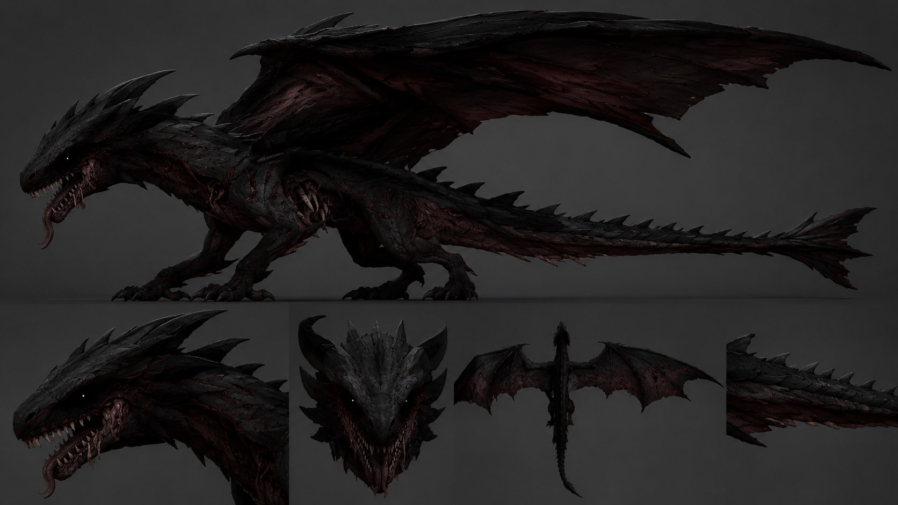
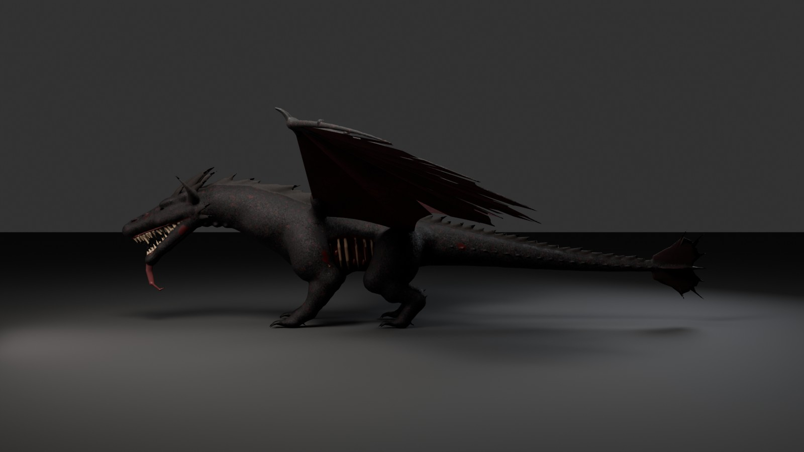
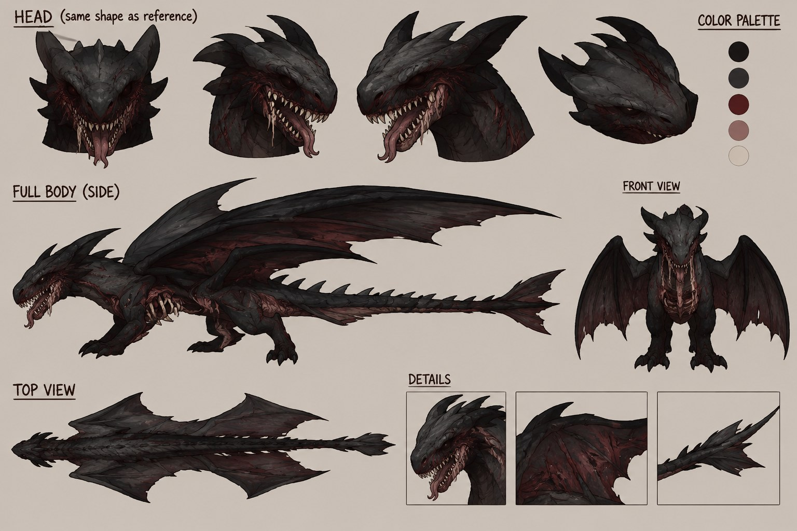
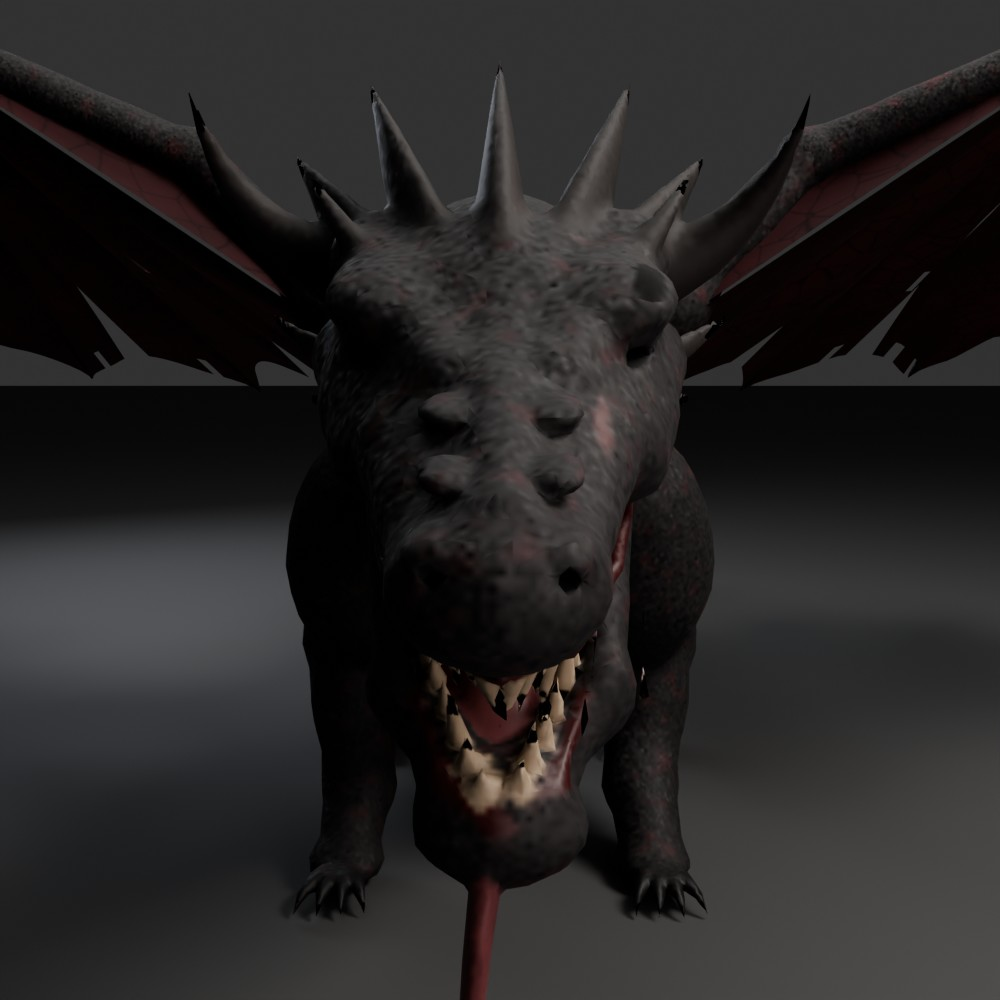
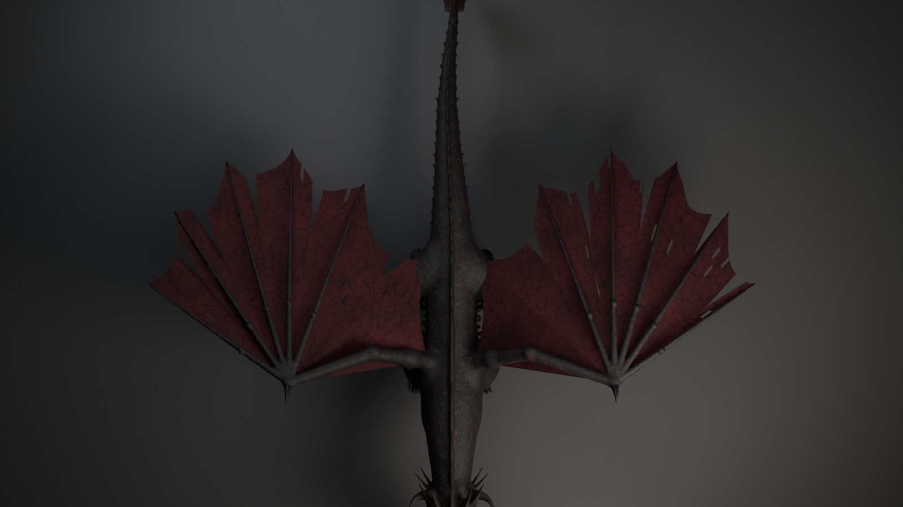

Bestiario Umbral · Especie II · Fauce Roja
Dragón Depredador
Karnathys sanguifauces · versión 2, rehecho desde cero
CabezaCuerpo y colaAlasHorneadoHuesosAnimacionesPrueba en Studio

Algo te observa desde la oscuridad
No tiene ojos. La cabeza es una superficie oscura y continua; en cada cuenca hay un punto de luz blanca diminuto que de día casi no se ve y de noche es lo único visible. No ilumina la cara.
Referencia frente al modelo
La izquierda es tu imagen; la derecha, el modelo de juego (el mismo que va a Roblox) renderizado desde un ángulo parecido.




El modelo de juego, en vivo
● Idle
Cargando el modelo con huesos…
Animación
Ver
Es el archivo exportado para Roblox: malla con skinning, 35 huesos y texturas horneadas. Las animaciones usan los mismos datos que el script de Studio.
«Te mira» hace que la cabeza y el cuello sigan a la cámara. «Oscuridad» apaga las luces: solo quedan los dos puntos.
Vistas del modelo de juego






Cómo se rehízo
1 · EsculturaCada músculo, hueso, cuerno y diente es una forma que se funde con las demás. El resultado es una piel continua de alta resolución, no piezas pegadas. Primero la cabeza, comparada con tu hoja hasta cuadrar la silueta.
2 · RetopologíaLa escultura se reduce a una malla de juego: unos 19 mil triángulos en el cuerpo (la cabeza tiene presupuesto propio para conservar los dientes) y unos 9 mil por ala. Todo bajo el límite de 20 mil de Roblox.
3 · HorneadoEl color, las escamas, el relieve y el brillo de la escultura se hornean en texturas de 1024 px: color, normal y rugosidad para cada malla.
4 · Huesos35 huesos con pesos por zona: la mandíbula y la lengua se mueven solas, las babas se estiran entre las dos mandíbulas y la membrana sigue a los dedos del ala.
Esqueleto
Root └─ Hips ├─ Chest │ ├─ Neck1 ─ Neck2 ─ Neck3 ─ Head ─ Jaw ─ Tongue │ ├─ LegFL_Upper ─ LegFL_Lower ─ LegFL_Foot │ ├─ LegFR_Upper ─ LegFR_Lower ─ LegFR_Foot │ ├─ WingL_Arm ─ WingL_Fore ─ WingL_Hand │ └─ WingR_Arm ─ WingR_Fore ─ WingR_Hand ├─ LegBL_Upper ─ LegBL_Lower ─ LegBL_Foot ├─ LegBR_Upper ─ LegBR_Lower ─ LegBR_Foot └─ Tail1 ─ Tail2 ─ … ─ Tail7 Mallas: Body · WingL · WingR (skinning) Ojos: EyeLPoint · EyeRPoint (puntos Neon que siguen a Head)
Paquete para Roblox Studio
model/PredatorDragon.fbxMallas con huesos y texturas. Impórtalo con Rig Type «Custom».
model/*_color · _normal · _roughness.pngTexturas de Body, WingL y WingR para SurfaceAppearance.
roblox/InstallPredator.luaInstalador para la Command Bar: ensambla el modelo, crea los ojos, las carpetas y los scripts.
roblox/DragonAnimator.luaAnimaciones por datos para Motor6D y Bones, con mirada (
SetLookTarget).Import 3D→PredatorDragon.fbx→Rig Type: Custom, sin combinar mallas.- Selecciona el modelo importado y pega
InstallPredator.luaen la Command Bar. - Play: noche cerrada, dos puntos que te siguen, teclas 1 a 9 para las animaciones y L para la luz.
Lo que conviene revisar
- Ni el instalador ni el skinning se han probado dentro de Roblox Studio. El modelo, los huesos y las animaciones funcionan en Blender y en este visor, pero falta la prueba de tu amigo.
- Si al importar Studio duplica el esqueleto por cada malla, el animador ya mueve todas las copias. Si las alas no se deforman, hay que revisar que estén soldadas al cuerpo; el instalador lo hace.
- Las texturas de 1024 px son el máximo de Roblox. De muy cerca, las escamas se ven más suaves que en la escultura.
- Walk y Run se animan en el sitio. Faltan movimiento, IA, daño y sonido.
Para la siguiente vuelta
- Una segunda pasada de escultura en Blender a mano, sobre esta base, para afinar arrugas y escamas grandes de la cabeza.
- Partículas de baba que gotean de la mandíbula en reposo.
- Que los puntos se apaguen un instante y reaparezcan más cerca del jugador.